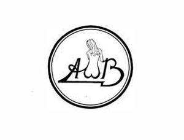

Trade Mark Journal No.2025/049 5 December 2025
UK00004299994 24 November 2025 (9,16,25,41)

- Class 9
- Compact discs; audio cassettes; records; DVDs; sound and/or video recordings; pre-recorded television programmes; cinematographic films; publications in electronic form; video games; computer games; laser discs; CD ROMs; interactive disks; apparatus for recording, transmission, reproduction of sound or images; media for recording sound, images, data (downloads, CDs, CD-ROMs, DVDs, DVD-ROMs, floppy disks, USB sticks, records, audio and video discs and cassettes); computers and peripheral devices thereto; headphones; headsets for portable media players and MP3 players and mobile phones; data-processing apparatus; computer software (recorded programs); games software for computers; software downloaded or downloadable via the internet, and via remote communications devices; bags for protecting and transporting computers, computer equipment and portable media players and MP3 players; mobile telephone accessories; portable media players and MP3 players; smart phones (including mobiles with music players); decorative magnets; sound mixers; loudspeakers; record players; amplifiers; microphones; computer peripherals (memories, data processors); Bags and cases specially adapted for holding or carrying portable telephones and telephone equipment and accessories; bags adapted for laptops. .
- Class 16
- Paper; cardboard; stationery; printed matter, periodicals; books, magazines, publications, writing or drawing implements; wrapping and packaging materials; diaries; song books; sheet music.
- Class 25
- Clothing; footwear; headgear; belts.
- Class 41
- Entertainment services; provision of live entertainment and recorded entertainment; production, presentation or rental of television and radio programmes and of films, sound and video recordings; information, news, videos, images and audio content in the fields of film, music, television, entertainment, sports, sporting events, mass participation competitions and events provided via a website; providing online non-downloadable magazines, newspapers, articles, electronic books, newsletters, and videos in the fields of music, film, television, entertainment, sports, sporting events, mass participation competitions and events; organising, arranging, conducting and producing events in the fields of music, film, television, entertainment, mass participation competitions and events; entertainment services in the nature of development, creation, production, distribution, and post-production of motion pictures, television shows and multimedia entertainment content; digital music [not downloadable] provided from the internet; digital music [not downloadable] provided from mp3 web sites on the internet; production of stage performances; provision of on-line electronic publications (not downloadable); arranging of music performances; entertainment in the form of live musical performances (services providing-); entertainment in the form of recorded music (services providing-); entertainment services for producing live shows; entertainment services in the form of concert performances; entertainment services performed by musicians; live entertainment; musical entertainment; production of musical recordings; live band performances; sound recording and video entertainment services; editing or recording of sounds and images; film production services; film distribution; video production services; video entertainment services; video tape editing; advisory services relating to entertainment; provision of information relating to entertainment; all of the above relating to performing artists and none relating to provision of music publishing services, music recording services or music licensing services.
Alan Edward Gorrie
Representative: BTO Solicitors LLP